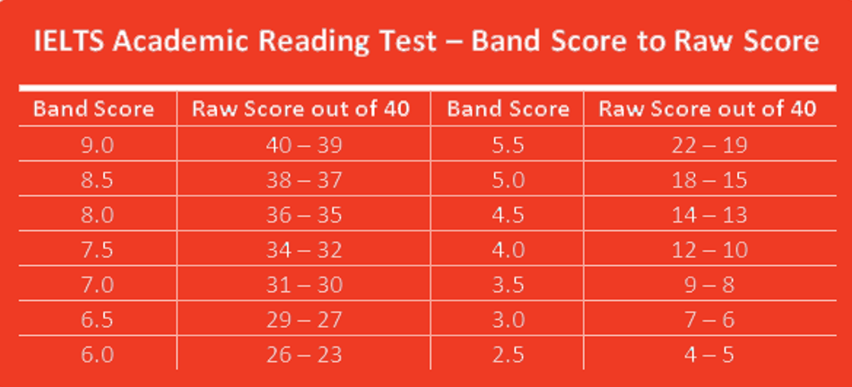

My second Blogpost About IELTS
April 24,2020
What is IELTS?
The International English Language Testing System (IELTS) is the world’s most popular English language proficiency test for higher education and global migration.
IELTS test format explained
Test takers who understand the format of IELTS are at an advantage. Make sure you’re familiar with how IELTS testing works. There are two IELTS tests available, IELTS Academic and IELTS General Training. Both tests are graded in exactly the same way. You’ll take the first three parts of the test on the same day, in the following order: Listening, Reading and Writing (there are no breaks between these tests). Your Speaking test will be held either on the same day or seven days before or after that, depending on local arrangements.
Why is IELTS important?
More than 10,000 organisations globally trust IELTS, so when you take the test you can be confident that it is recognised by educational institutions, employers, governments and professional bodies around the world. As one of the pioneers of four skills English language testing 30 years ago, IELTS continues to set the standard for English language testing today. Governments in Australia, Canada, New Zealand and the United Kingdom use IELTS to process immigration applications.
{kind=link}